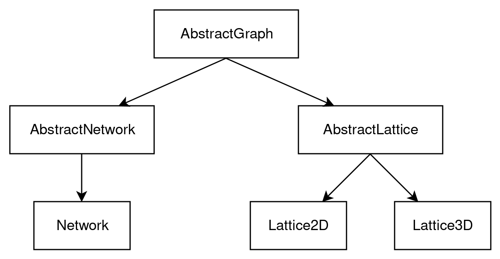

Graph Types

GraphEvolve.AbstractGraph — Type.AbstractGraphAbstract type
Subtypes
- AbstractNetwork
- AbstractLattice
GraphEvolve.AbstractNetwork — Type.AbstractNetworkAbstract subtype of AbstractGraph
Subtypes
- Network
GraphEvolve.AbstractLattice — Type.AbstractLatticeAbstract subtype of AbstractGraph
Subtypes
- Lattice2D
- Lattice3D
GraphEvolve.Network — Type.Network(N::Int; seed::Int=8)This type represents a random network in which edges are allowed to be active between any two of the N nodes. It houses information about the nodes, edges, clusters, and observables.
Arguments
N: Total number of nodes in the network
Keyword Arguments
seed: Seed value for the random number generator (default = 8)
Returns
g: A new instance of type Network
Attributes
N: Total number of nodes in the networkt: Current step in the evolution process, number of edges in the networkedges: Set of edges present in the networkcluster_ids: Array with nodes as indices and cluster IDs as valuesclusters: Dictionary with cluster IDs as keys and clusters as valuescluster_sizes: Dictionary with cluster sizes as keys and cluster counts as values, i.e. cluster size distributionrng: Random number generatorobservables: Custom type containing observables associated withg
GraphEvolve.Lattice2D — Type.Lattice2D(L::Int; seed::Int=8)This type represents a 2D lattice in which edges are only allowed to be active between nearest neighbors. It houses information about the nodes, edges, clusters, and observables.
Arguments
L: Side length of the square lattice
Keyword Arguments
seed: Seed value for the random number generator (default = 8)
Returns
g: A new instance of type Lattice2D
Attributes
L: Side length of the square latticeN: Total number of nodes in the lattice,N = L^2t: Current step in the evolution process, number of edges in the latticeedges: Set of edges present in the latticecluster_ids: Array with nodes as indices and cluster IDs as valuesclusters: Dictionary with cluster IDs as keys and clusters as valuescluster_sizes: Dictionary with cluster sizes as keys and cluster counts as values, i.e. cluster size distributionrng: Random number generatorobservables: Custom type containing observables associated withg
GraphEvolve.Lattice3D — Type.Lattice3D(L::Int; seed::Int=8)This type represents a 3D lattice in which edges are only allowed to be active between nearest neighbors. It houses information about the nodes, edges, clusters, and observables.
Arguments
L: Side length of the cubic lattice
Keyword Arguments
seed: Seed value for the random number generator (default = 8)
Returns
g: A new instance of type Lattice3D
Attributes
L: Side length of the cubic latticeN: Total number of nodes in the lattice,N = L^3t: Current step in the evolution process, number of edges in the latticeedges: Set of edges present in the latticecluster_ids: Array with nodes as indices and cluster IDs as valuesclusters: Dictionary with cluster IDs as keys and clusters as valuescluster_sizes: Dictionary with cluster sizes as keys and cluster counts as values, i.e. cluster size distributionrng: Random number generatorobservables: Custom type containing observables associated withg
GraphEvolve.Observables — Type.ObservablesContains the observables associated to a percolation simulation.
Attributes
avg_cluster_size: Array whereavg_cluster_size[t]is the average cluster size at stept-1heterogeneity: Array whereheterogeneity[t]is the number of unique cluster sizes at stept-1largest_cluster_size: Array whereC[t]is the largest cluster size at stept-1delta: See analysismethods.computedelta for more info